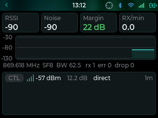
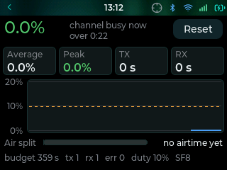
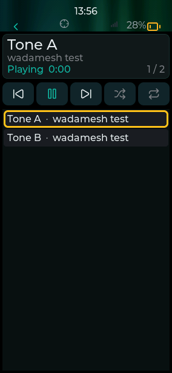

18 small apps you install from the Store on the device itself, over Wi-Fi. Radio tools, navigation, emergency messages, music and games. They are free, run in a sandbox that keeps them away from your keys, and every one is read before it is listed.
01Open the StoreIn the app drawer, tap Store. It needs Wi-Fi.
02Tap GetThe app installs in a few seconds and shows up in the drawer.
03Updates find youThe Store tile shows a number when an installed app has a newer version.
Radio tools

RF Monitor v1.4
Your channel at a glance, and every packet you hear.
Every board
More about RF Monitor
Live RSSI and noise as tiles and a filled chart, with the noise floor dashed underneath, and the packets heard most recently with their type, signal bars, SNR and hop count. Tap a packet for its details: who sent it, the route it took, how far its SNR sat above what your spreading factor can still decode, its size and how long it was on the air.
Margin above the decode limit, per packet
Packet type, route and airtime
Works with keys and trackball too

Airtime v1.6
How busy the channel really is.
Every board
More about Airtime
The live channel load as a big figure, the average and peak over the session, and your own time on the air. A filled chart shows the load against your region's duty-cycle limit, and a bar splits the airtime into what you received and what you sent. While it runs it keeps a Home widget with the load up to date.
Duty-cycle limit on the chart
Receive and transmit split
Home widget while it runs (not on the 2 MB Heltec V4)
Wardrive v1.3
Survey your coverage while you drive or walk.
Every board but the 2 MB Heltec V4
More about Wardrive
Every 20 seconds it sends a discovery probe that every node in earshot answers, and logs each reply with your GPS position, altitude and both directions of the link: how well you heard them and how well they heard you. The run goes to a CSV you can take off the device, and it plots back on the map so you can check coverage before you drive it again.
Both link directions per node
CSV log with position and altitude
Run plotted on the map
Navigation and outdoors
ProTreck v1.2
An outdoor watch: sun, moon, stopwatch, timer and altitude.
Four tools you swipe between. Astro shows sunrise, sunset and the moon phase for where you are. Chrono is a stopwatch with laps, Timer a countdown with an alarm, and Alti your GPS altitude with its minimum, maximum and a trend graph.
Sunrise, sunset and moon phase
Stopwatch with laps and a countdown timer
Altitude trend graph
Nearby v1.0
Your contacts on a real map, nearest first.
Every board but the 2 MB Heltec V4
More about Nearby
Shows the contacts that share a position on the firmware's own map tiles, sorted by distance, with the bearing to each one and a live count of the packets you hear. It is also the reference app for the SDK's map, list, geo and packet calls, so it is a good place to start reading code.
Real map tiles inside the app
Distance and bearing to each contact
Reference app for wada.map and wada.geo
GPS Compass v1.0
A compass dial, the live GPS fix, and the way to a contact.
Every board
More about GPS Compass
A heading dial with the live GPS fix underneath. On the ThinkNode M9 the heading comes from its magnetometer, with a calibration you run once by turning the device around; on other boards it uses your GPS course while you move. Pick a contact with a known position and it appears on the dial with its bearing and range.
Tracks the distance, time, speed and altitude of a trip from the GPS. Start and stop it as you go, reset it for the next trip, and it keeps your trip across app restarts.
Distance, time, speed and altitude
Survives app restarts
Needs a GPS
Messaging and safety
Ping v1.0
Round-trip time to any contact, with distance and bearing.
Sends a ping as a direct message and measures how long the answer takes. Both devices swap their GPS position, so the result shows the round-trip time, the distance and the bearing when both have a fix. It also answers pings from other people running Ping.
Round-trip time over the mesh
Distance and bearing when both have GPS
Answers other people's pings
MECP v1.0
Emergency messages everyone can read in their own language.
Writes and reads messages in the Mesh Emergency Communication Protocol. Pick a severity and the codes (injury, flooding, need water and many more), add the number of people and your position, and post it to the channel you choose. MECP lines heard on your channels while the app is open are shown decoded in plain words.
Severity, codes, head count and position
Decodes MECP messages you receive
Plain text, so it crosses any channel
Media

Music v1.0
Your MP3s and WAVs from the SD card, with the screen off.
Boards with a speaker
More about Music
Plays the MP3 and WAV files in a Music folder on the SD card, three folder levels deep, so Music/Artist/Album works. Previous, play and pause, next, shuffle and repeat, and it keeps going through the list with the screen off. It follows the device's sound switch and volume, and message chimes stay quiet while a track plays.
Shuffle and repeat, one track or all
Keeps playing with the screen off
T-Deck, T-LoRa Pager, T-Display P4, Tanmatsu, T-Deck Max
Games
Snake v1.0
The classic. Swipe to steer.
Every board
More about Snake
Eat the food, grow longer, do not bite yourself. Steer with swipes, the trackball or the arrow keys, and tap after a game over to play again. Small enough to read in one sitting, which makes it the SDK's first reference app.
Slide the tiles, merge equal numbers and reach 2048. Swipe or use the trackball to move, tap to start again, and your best score is kept between games.
Twenty-one against the dealer from a six-deck shoe. Hit, stand, double down and split, set your bet before each hand, and your bankroll is still there the next time you open the app. Play it by touch, on the keyboard (H, S, D, P) or with the trackball, and the table scales to the screen, the T-Display P4 included.
Split and double down
Bankroll kept between sessions
Touch, keyboard or trackball
Space Invaders v1.1
The classic alien shooter, with your high score kept.
Shoot the descending rows before they land, hide behind the shields and hit the bonus UFO for extra points. Each cleared wave comes back faster. Move with swipes or the arrow keys and fire with a swipe up, a tap in the middle or the up key; your high score is kept between games.
Shields and a bonus UFO
High score kept
Touch and keyboard controls
Tools
SDK Test v1.7
For app makers: checks the extended SDK on your board.
Every board but the 2 MB Heltec V4
More about SDK Test
Runs through the extended Lua SDK on the board in your hand and shows the results on screen: capabilities, clock, battery, GPS, private files, audio, SD listing, crypto against published test vectors and channel discovery. A few buttons transmit test messages, so it is a bench tool rather than something to leave running.
Crypto checked against RFC test vectors
Every capability flag on one screen
Some buttons transmit
SD Scan v1.1
Finds and removes Windows malware on the SD card.
Boards with an SD card
More about SD Scan
Written for the SD-card worm some ThinkNode M9 cards shipped with: a hidden autorun file and Windows programs disguised as shortcuts. They cannot run on a radio, but they run on the first Windows PC the card goes into. The firmware decides what counts as a threat, so the app can remove those files and nothing else: never map tiles, backups or chat history.
Firmware decides what is a threat
Cannot delete your own files
Asks before removing anything
Make your own app
Apps are one Lua file plus a one-line manifest. They talk to the device through the wada.* API: screens and input, timers, storage, the mesh, GPS, the map and audio. Read a reference app, write yours on the device, and send it in for everyone.
1. Read the SDK guide
The SDK guide starts with your first app in ten lines and documents every call. Snake, RF Monitor and Nearby are small enough to read in one sitting.
2. Try it on your own device
Copy your .lua file to /meshcomod/apps/ on the SD card (or /apps/ on boards that store internally) and it appears in the app drawer, no manifest needed. How side-loading works.
3. Send it in
Fork ALLFATHER-BV/wadamesh, add deploy/apps/<id>/<ver>/ with your .lua and manifest, add your app to deploy/apps/apps.json, and open a pull request saying what it does and which boards you tried. A published version is never edited: a change ships as the next version. No git? Open an issue with the file attached. The full guide.
4. What review looks for
Never reads, sends or stores keys, identities or channel secrets
No flash writes in a loop or on every packet
Nothing that needs more than the Heltec V4's 2 MB of PSRAM
Transmits or changes radio settings only when the user asks
Data leaves the device only when the user asked for it
If something needs changing we say what and why on the PR, and help you land it. Apps are published under GPL-3.0 like the rest of the firmware.
This page is generated from the same catalog the devices read, so the versions here are the versions you get. Questions? Ask on Discord or read the user guide.